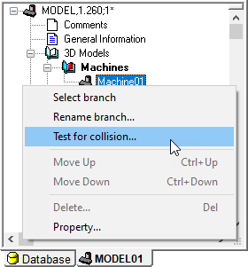
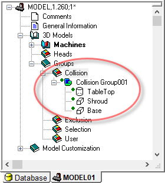
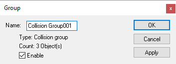
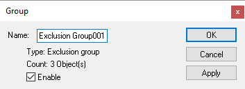

Collision Testing
{kind=link}
The model as defined so far does not have collision testing enabled. Without collision testing of the model, VM will not detect when a tool, part or fixture touches a component of the machine. However, even with model collision testing disabled, VM will continue to check for collisions and gouging between the tool and the part, in-process stock and fixtures.
Setting collision testing for the entire model is a simple step. Right-mouse on the “Machine01” machine object and select the “Test for collision” menu entry. When the Collision dialog appears, first select the “Entire branch” radio button, then select the “Enable” checkbox, and finally press OK to set the collision status. A green dot will now be shown in the model navigator in front of each physical component of the model. This green dot indicates that collision testing is enabled for that component; a red dot would be shown if collision testing is disabled. Note: if you have been following the steps up to this point in the manual, the model will now appear in a transparent red color signifying that its objects are colliding. This will be explained in “Collision Exclusion Groups”.
Collision testing takes CPU. Model performance can be improved by only testing for collisions on objects that are of concern. You can select individual components or a range of components to apply or remove collision testing.
To apply or remove collision testing; right-mouse on the highest component (hierarchically speaking) of interest in the navigator and select the “Test for collision” menu entry. You can enable or disable collision testing on a range of components in the model, starting at the selected component, as follows:
Current selection: Sets the collision testing status for the object that was selected. This choice is only available if the selected object is a physical component.
Current selection and direct children: Sets the collision testing status for the object that was selected and all objects directly below it (i.e., a single level only). This choice is only available if one or more of the objects (i.e., selected or children) are physical components.
Branch to any axis: Sets the collision testing status for the object that was selected and all objects in the branch below it, but no further in the branch than any axis component. Note that a Reference Axis is an “axis” by definition. This choice is only available if at least one of the objects in the branch is a physical component.
Branch to movable axis: Sets the collision testing status for the object that was selected and all objects in the branch below it, but no further in the branch than any movable axis component. Note that a Reference Axis is not a movable axis. This choice is only available if at least one of the objects in the branch is a physical component.
Entire branch: Sets the collision testing status for the object that was selected and all objects in the branch below it. This choice is only available if at least one of the objects in the branch is a physical component.
The following safety settings will be applied to the range of components selected above:
Enable: Set or clear this checkbox to enable or disable collision testing on the selected objects. When multiple objects are involved, a third “grayed” state is available for the button, which can used to change the safety distance for collision-enabled objects without affecting the collision state of the objects in the branch.
Safety: Use this field to specify a safe clearance distance around collision enabled objects. A collision will be signaled when another object intersects with the safety zone, which is offset from the original surface by the distance specified. Safety zone testing can use considerably more CPU, so use this feature only where necessary. You can see the effect of the safety zone around objects by toggling Simulation»Show»Safety Zones from the menu bar. This field will be blank if the selected objects have different safety settings.
The collision testing status and safety zone value can be viewed and modified from the Properties dialog of physical components. The Machine Properties dialog has a Safety values tab that lists all collision-enabled objects and their safety clearance amounts. You can change the safety amount for individual objects, or select multiple objects and use the Set button to change the safety amount for the selected objects. The Apply button updates the simulation window to show the effect of the new safety settings.
VM tests for collisions only between objects that can move with respect to each other. Another way of saying it is that VM tests for collisions only between objects that are separated from each other in the model navigator by a movable axis (i.e., linear, rotary or curve). A collision occurs when two such objects touch or overlap each other.
Objects are drawn in a red transparent color when colliding, with a highlighted yellow line marking the intersection between the surfaces of the colliding objects. If the safety zone around the object is violated, then the safety zone is drawn in a yellow transparent color, with a highlighted yellow line marking the intersection between the safety zone surface and the surface of the object that is too close.
Collision testing takes CPU time. Safety zone testing can take considerably more CPU time. You should disable collision testing for any objects where collision testing is not required.
Collision Groups
{kind=link}
All objects that are enabled for collision testing are also listed in one of the collision groups that can be found in the navigator window under the Groups»Collision header. When objects are first enabled for collision, they are added to the first collision group in this section (“Collision Group001” by default). Objects can also be enabled for collision by dragging them from the Machines or Heads sections of the model navigator to a particular collision group, or to the Groups»Collision header, which will create a new group containing the dragged object. You can hold the Ctrl key down when dragging to also include all dependent objects in the model navigator tree.
Multiple collision groups can be created for your own organizational purposes, but an object can only appear in a single collision group at a time. Objects can be easily dragged from one collision group to the next.
{kind=link}
Delete an object from the collision group to disable collision testing on that object. You can also delete the collision group itself, which disables collision testing on all objects that were in that group. Finally, you can open the Properties of a collision group and disable the collision property of the group. This has the same effect as though the group was deleted (i.e., collision testing will be disabled on all objects listed), without actually affecting the collision enabled/disabled state of the objects themselves. This can be very useful for “what if?” testing of the collision behavior of the model.
Collision Exclusion Groups
In the example machine created to this point, the physical components are touching (i.e., the base touches the shroud, and the shroud touches the rotary table). When collision testing is enabled on these objects, they are then displayed as colliding. One way to avoid this problem is to change the physical definition of objects such that they do not overlap or touch, but this may not always be practical or even possible. VM has a “collision exclusion” feature that provides a much better way of handling this problem.
With collision exclusion, you can tell VM to ignore collisions between groups of related objects. For example, you could group all of the elements of the base of the machine in one exclusion group, and all of the objects of the head of the machine in another exclusion group. VM will not test for collisions between any objects that reside in the same group, but it will continue to test for collisions between those objects and all other collision enabled objects.
{kind=link}
{kind=link}
{kind=link}
{kind=link}
{kind=link}
Collision exclusion groups can be found in the navigator window under the Groups»Exclusion header. You create a new group by dragging an object to the Groups»Exclusion header. You add objects to an existing group by dragging them to the group header. You can also drag an entire collision group to the exclusion group header to create a new exclusion group. You can create as many groups as are necessary to handle the collision exclusion requirements of your model. The same object can appear in multiple exclusion groups. Objects and entire groups can be deleted to remove collision exclusion relationships. Finally, you can open the Properties of a collision exclusion group and disable the exclusion property of the group. This has the same effect as though the group was deleted, which can be useful for “what if?” testing.
GENER and CERUN automatically perform collision exclusion on any objects that are colliding when the model is first loaded. So left unchanged, the example machine model defined to this point will properly appear in GENER or CERUN without the base, shroud and table being marked as colliding. However, it is better practice to not rely on this feature, but instead create exclusion groups based on your own understanding of how the model behaves. To do so for the example model, simply drag the “Collision Group001” to the Groups»Exclusion thereby creating a new “Exclusion Group001”.